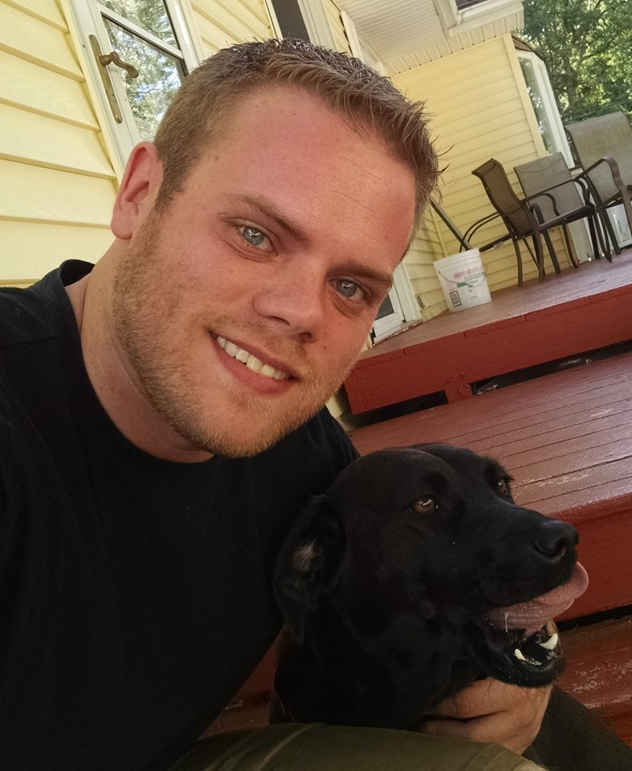

CEN4010

My name is Kevin and I'm 29 years old. Currently most of my free time is split up between working full-time as a manager of train operations(MTO) and going to school. I've been a MTO for about 5 years now, and its basically like being an air traffic controller, but for the railroad. Outside of that I like traveling, playing some video games, hiking, and various other activites.
I am a computer science major. One of the reasons I chose this major was because I've always enjoyed working around computers, but it was also one of the few majors I could do around my hectic work schedule. My job is a 24-hour manned position, so I work a lot of mornings, evenings, and nights. My hours are all over the place and constantly changing. CS was one of the few majors that I could do that could work around that. But after taking a couple programming classes I've come to really enjoy it. That feeling of finally getting your code to work after spending hours working, debugging, and modifying is, for the lack of a better word, fun.
Currently my sights aren't very specific. I'm looking for a way to break into the tech field. I'd be satisfied with taking a software related role for a railroad company to merge my skill sets together.